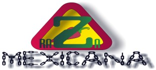

Hacked by
w w w . r a z a - m e x i c a n a . o r g
El destruir al indigena es destruir al hombre mismo.
"Gobernacion me hace los mandados"
- Vicente FoX -
"Vicente FoX y Gobernacion me hacen los mandados"
- Dead Sector -
"Ahora la revolucion la hacemos
nosotros, no con armas, ni manifestaciones, sino con nuestros actos,
nuestros conocimientos, nuestras creencias, sin violencia, a pesar de
las barreras que nos pongan, siempre pasaremos por sobre de ellas,
porque somos mexicanos, los nuevos mexicanos del siglo XXI, somos latinos,
latinoamerica esta saliendo a flote, el impero gringo decae...es tiempo
de que latinoamerica surga como nueva potencia mundial, y nos toca a
todos los jovenes hacer ese cambio, con ayuda mutua, ya no cabe el
odio, ni el racismo, es tiempo de ayudarnos.........."
- KuKulKan -
Dedicado a los admins sobre el accesso ilegal al server donde se hospeda raregazz no hay lugar seguro atte: alt3kx_H3z
Saludos a la Raza Mexicana, a vicente Fox que intenta hacer un
cambio , a los 4 fantasticos que piensan tapar el hoyo en la capa de ozono y
terminar con todos los males de la humanidad.
Este Hack surgio por que vi como la gente
malinterpreta lo que es un hacker. cualquier wey que corre ntis se cree hacker.
Y me caga que lo quieran hacer por dinero o para sacar provecho. si les cayo el
saco a los admin de este server pues que se lo pongan. a veces entramos a un
server observamos y salimos sin que nadie se de cuenta. En este caso me di
cuenta que quieren hackear para vender firewalls. malo malo malo. aqui estan
varios mensajes que se ven interesantes.
Apo 7/9/99 6:53 PM lo que es señal de que debo
desconectarme...=)
ah,e s que hoy le dije a mi jefe (mi jefe es
buena onda) que me diera chance de no regresar
en al tarde... noma s me dijo
"te pasas de
veras... orale pues..." =)
Chaco 7/9/99 6:54 PM Ya ves? es lo bueno de trabajar en el
gobi-erno.....
Apo 7/9/99 6:55 PM en el gob(inf)ierno...=) hasta eso me siento agusto
aca...=)
|
Chaco 7/14/99 7:59 PM ja ja ja.... cálate, tengo una mejor pa
ti....
Nos encomendaron hackear una máquina para
venderles un firewall, nos dieron dos máquinas
a hackear y no
pudimos. Pasamos el informe y
nos dijo el mono
ese:
Ah! Claro que no las pudieron
hackear, las
máquinas NO están conectadas
a Internet....
|
Chaco 6/21/99 9:51 PM Claro que
si......
Pero este baboso de la cámara del Pan.....
qyue no me deja en
paz...
Blondy 6/21/99 9:51 PM Mandalo a la goma
Chaco 6/21/99 9:51 PM Claro que no bola... ash!!!!!!!
Pobre imbécil.. no sabe ni conectar unos cable
en la cámara de diputados...
|
Chaco 6/22/99 1:56 PM Lo logré, lo logré... encontré una manera de
entrar a www.digital.com.mx :)
Chaco 6/22/99 1:59 PM TODO.. está lleno de agujeros..... :)
Para vender un firewal... tengo que entrar a
www.digital.com.mx/gobierno
|
|
|
y no podia faltar : FUCK TELMEX
Moskos is DEad by DeadSEctor
Saludos Oficiales :
|
xDawn, Yo_Soy, AcidGum , altekx_h3z , Yield20 , dr_fdisk^ , Megaflop , Nauj , DeadSectr , AloneX ,
Nahual , pablojuan , Kukulkan , SufferBoy- , NeuroDoom , Pixelated , PsychicTV , Dacure , Vlad , buster , DarkSide
|
Teams oficiales :
|
Raza-Mexicana , RareGazz, Ignition , Rebelion , hackers Mexico , Electronikal
Nerve
|
Saludos al Culto de La Vaca Muerta
Chinga tu madre enano vodoke xDD
Saludos a capt. crunch
Saludos a X-PLOIT por ser unos de los creadores del hactivismo
Solo Elites
- RaZa-MeXiCaNa -
leyendaurbana.tripod.com
raza-mexicana@bigfoot.com
Greetings :
www.2600.com
www.hackernews.com
www.attrition.org
